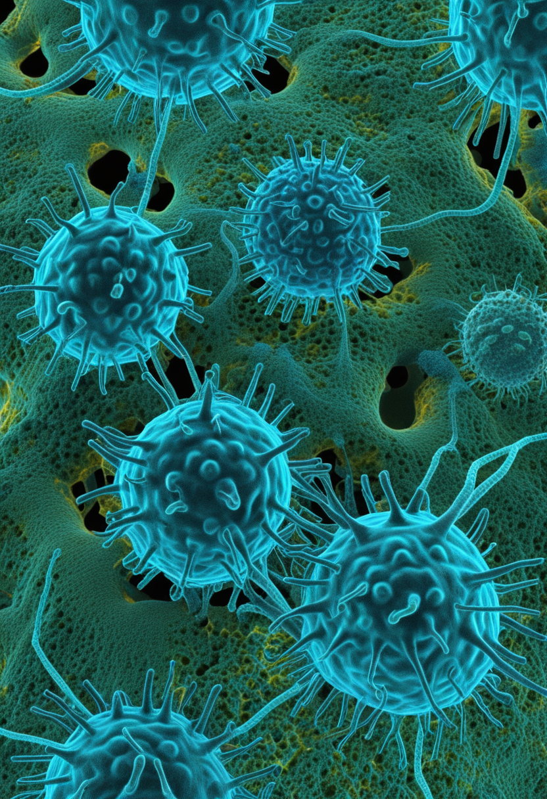
金曜日の便り。ウガンダ西部でエボラPHEICへの対応が続く中、2026年6月30日に同地域でマールブルグウイルスによる乳幼児死亡が確認された。前例のない「2種のフィロウイルス並行流行」という状況は、医療リソースと接触者追跡体制の二重負担という深刻な懸念を生んでいる。同じ週、量子コンピュータが98量子ビットの壁を越え、世界初のワイヤレスBCIが人体に埋め込まれ、転移性膵臓がんの生存期間がほぼ2倍になるデータが出た。世界は同時多発的に動いている。
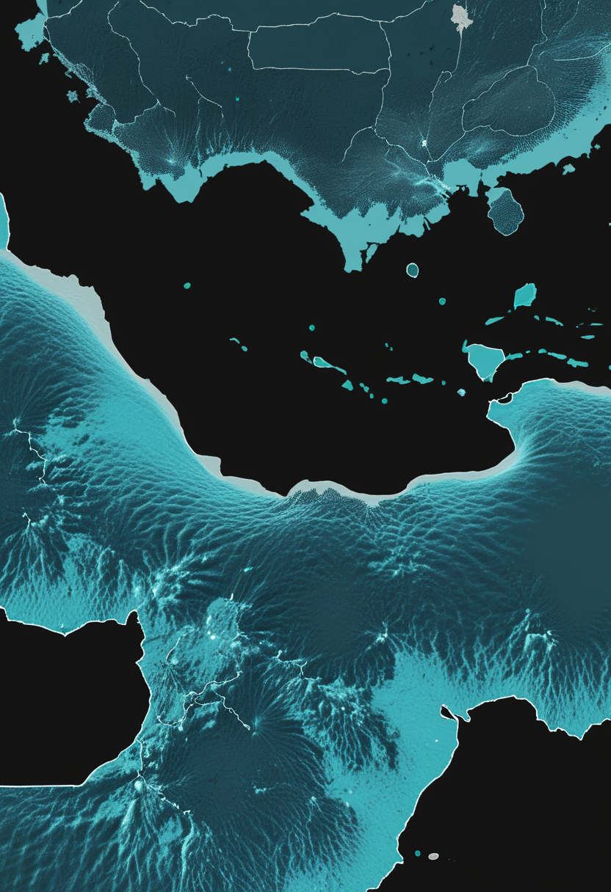
エボラ（ブンジブグヨウイルス）のPHEIC宣言から7週目、DRC+ウガンダへ対応リソースを集中させる中で、ウガンダ西部キェゲグワ地区でマールブルグウイルスが検出された（STAT News 6/30）。1歳6か月の乳幼児死亡例から同定され、7月1日時点で追加感染者なし・接触者全員陰性で局所的封じ込め態勢に入っている。しかし2種のフィロウイルスが同地域で並行流行するシナリオは前例がなく、医療リソースの二重負荷と接触者追跡の複雑化が深刻な懸念として浮上している。ウガンダ保健省は当初「認識していない」と述べたが、米国大使館は6月29日に健康警報を発令済みだった。
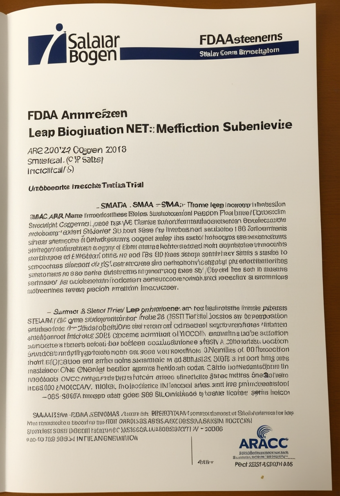
Biogenの次世代SMA薬・サラネルセン（年1回皮下投与アンチセンスオリゴヌクレオチド）が、遺伝子治療（Zolgensma）後に効果が不十分だったSMA患者向けにFDA画期的療法指定を取得した（6月4日）。Phase 1bデータでは同患者が新たな運動マイルストーンを達成しており、「遺伝子治療後のアンメットニーズ」を体系的に標的にする初の薬剤として位置づけられる。Phase 3「STELLAR-2」（Zolgensma投与後6か月での評価）は2026年6月より組み入れ開始し、年1回投与という利便性はSpinraza（4か月毎髄注）から大きく前進している。
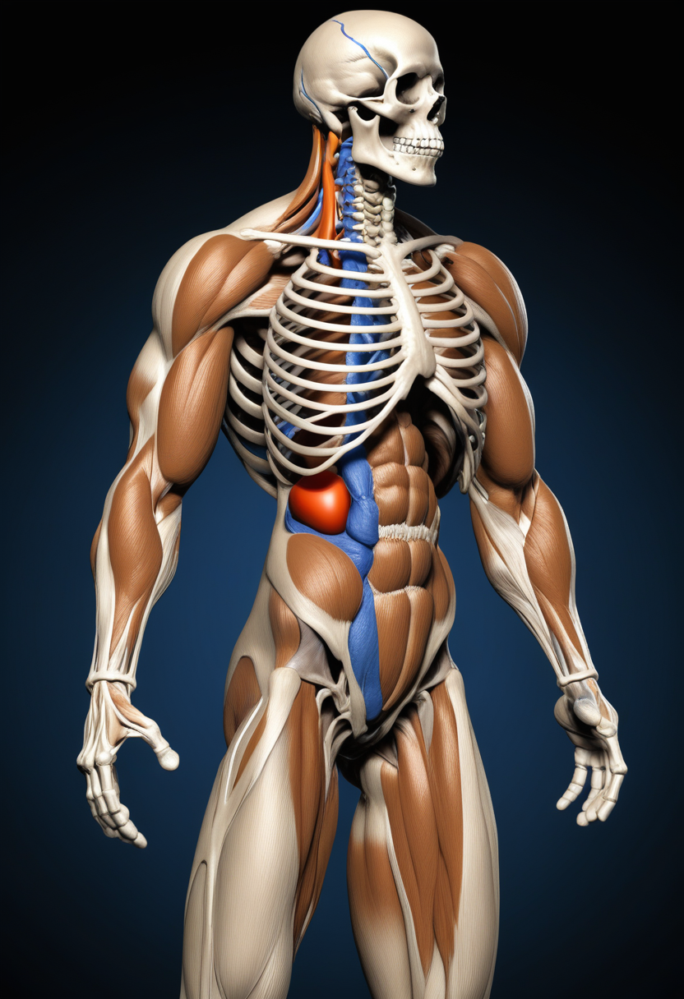
Scholar Rockのアピテグロマブ（ミオスタチン阻害薬）は現在FDA BLA審査中（PDUFA日: 2026年9月30日）。2025年9月の製造施設査察問題（Catalent Indiana）を乗り越え、再査察完了で承認への道が整った。SMN補充療法に「筋肉側アプローチ」を追加するコンビネーション療法として初の薬剤であり、承認されれば「神経を守る」から「筋肉を取り戻す」というパラダイム転換を実現する。欧州では2026年後半にドイツでの先行ローンチが予定されている。
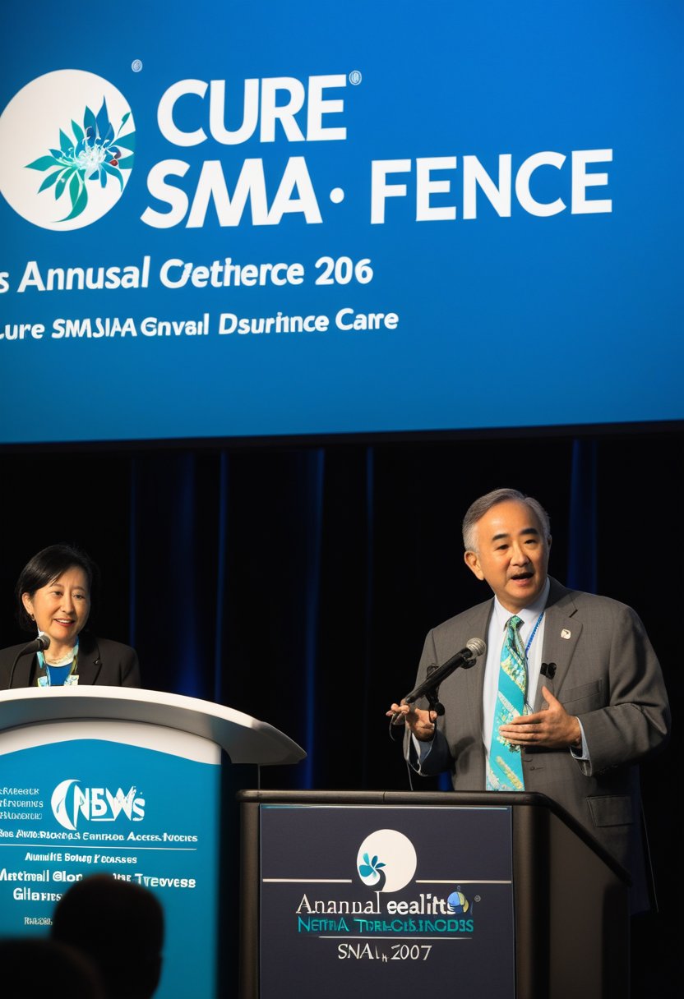
2026年6月25〜28日、Cure SMA年次会議がフロリダ州オーランドで開催され、最新のSMA治療・ケアの進展が患者・家族・研究者に共有された。専門家向け「Annual SMA Research & Clinical Care Meeting」（6/24〜26）では承認済み治療薬へのアクセスに関する保険障壁・成人発症SMAのケア課題・精神的健康支援などが議論された。日本では新生児スクリーニング（NBS）の全国展開がまだ約20%カバー率にとどまっており（全国義務化未達）、「早期発見・早期治療」の有効性が示される中で政策的前進が求められている。
サラネルセン（Biogen・年1回投与）とアピテグロマブ（Scholar Rock・筋肉ターゲット）が共に2026年後半の重要マイルストーンを控え、SMA治療は「第1世代（SMN補充）」から「第2世代（利便性向上+筋肉再建）」への移行期に入っている。日本の新生児スクリーニング全国義務化は引き続き最重要の政策課題だ。
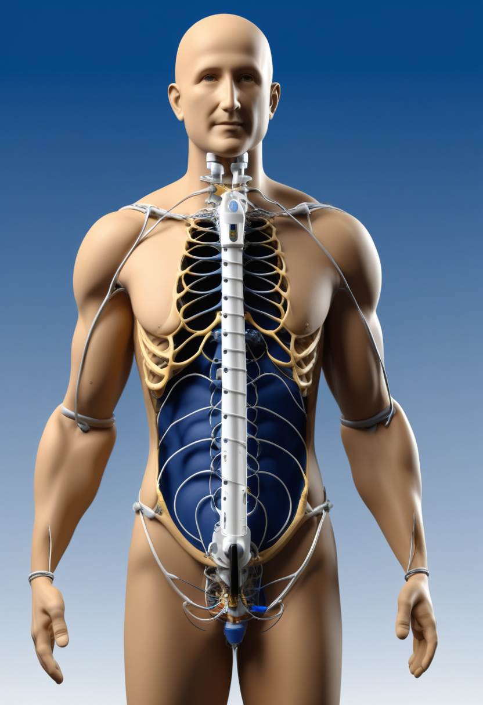
2026年6月17日、ミシガン大学の神経外科チームがParadromics社製「Connexus BCI」を世界で初めて人体に埋め込む手術を実施した。患者は運動ニューロン疾患により発話困難な女性で、脳表面の421電極コーティカルアレイが胸部埋め込みの送受信機に無線接続される構造だ。FDAが2025年11月にIDE承認した「Connect-One早期実施可能性試験（EFS）」の第1例で、長期安全性と音声・テキスト合成による発話回復能力を評価する。有線不要のワイヤレス設計は長期・在宅使用の実現可能性を大きく高める歴史的なマイルストーンとなった。
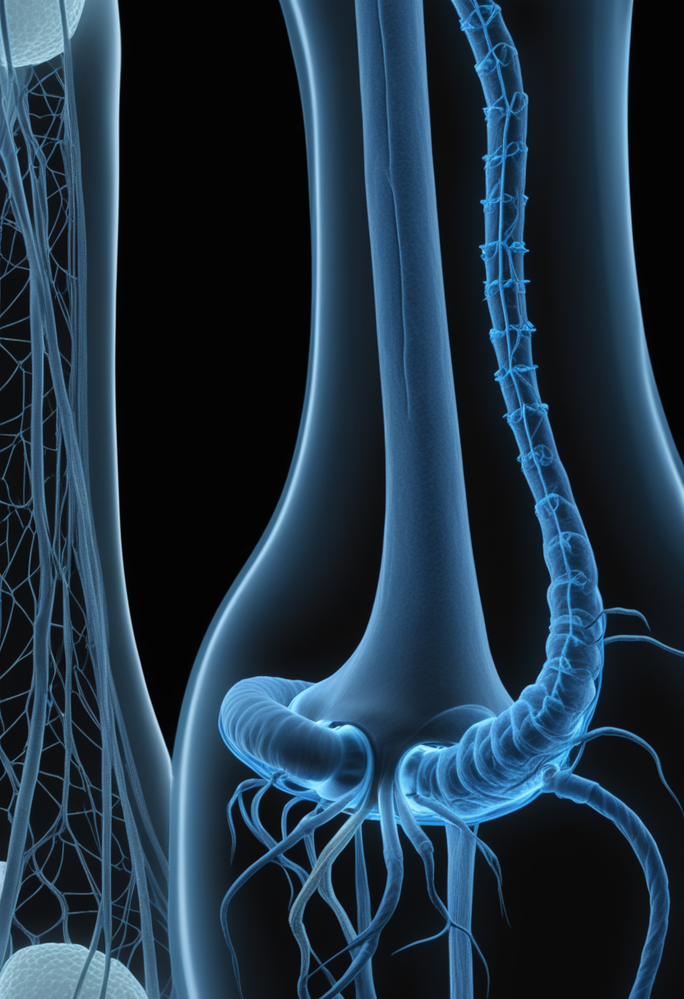
Synchronは血管内留置型BCI「Stentrode」（16電極）のピボタル臨床試験を2026年内に開始すると発表した（6月6日）。2025年11月調達の2億ドルシリーズD（Double Point Venturesリード）を原資とし、複数の米国サイトで患者登録を進める。前号（7/2）で取り上げた視線サッカードデコード成功（arXiv 2506.07481）と合わせ、同社のロードマップは実用化への明確な軌道に乗っている。成功すれば永久埋め込み型BCIとして初めてFDA PMAを申請する企業となる見込みだ。
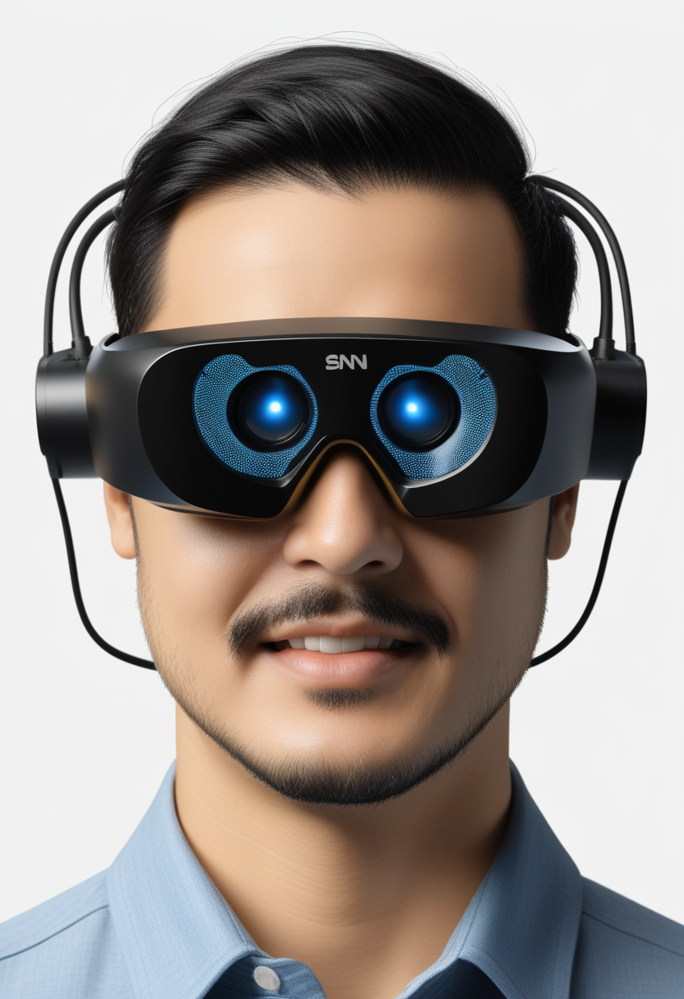
スパイキングニューラルネットワーク（SNN）を用いたニューロモルフィック型アイトラッカーが、従来のANN比で推定計算量850倍削減・モデルサイズ20倍削減を達成しながら3.7〜4.1ピクセルの精度を維持したと報告された（arXiv）。推定消費電力3.9〜4.9mW・遅延3ミリ秒・動作周波数1kHzを実現しており、AR/VRウェアラブルへのリアルタイム視線追跡の実装に大きく近づいた。Tobiiも同時期に標準ウェブカメラをリサーチグレードに変換するソフトウェアを発表しており、視線入力のアクセシビリティが広がっている。
ワイヤレス化（Paradromics）と承認ルート確立（Synchron）が同時進行することで、BCIは「特別な試験的デバイス」から「在宅使用可能な医療機器」へのシフトを本格的に開始した。低消費電力視線追跡のウェアラブル統合も加速しており、BCIとの補完的利用が現実的になっている。
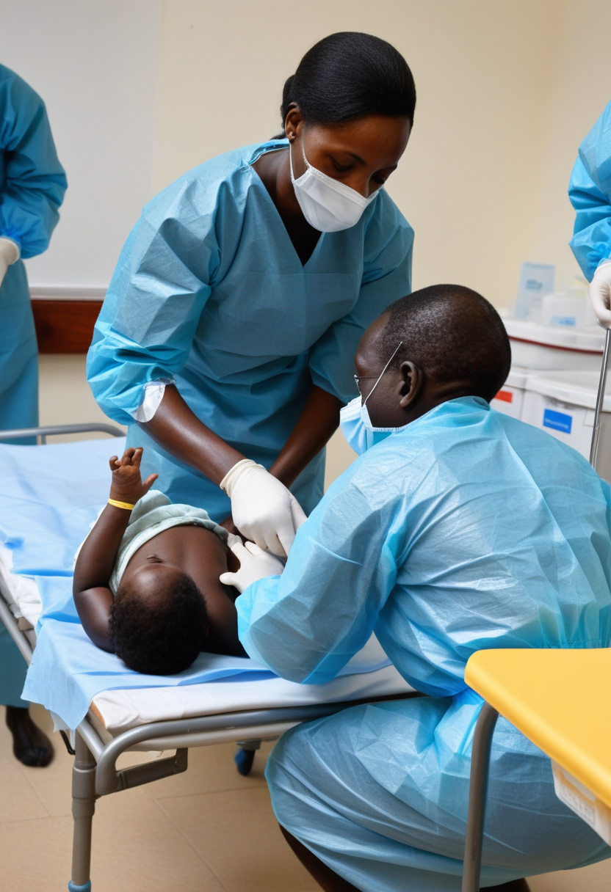
ウガンダ西部キェゲグワ地区で2026年6月30日、1歳6か月の乳幼児の死亡例からマールブルグウイルスが検出されWHOへ正式報告された。7月1日時点で追加感染者なし・接触者も全員陰性で局所的封じ込め態勢に入っている。同国はブンジブグヨ型エボラのPHEIC（5月16日宣言）に対応中であり、専門家は医療リソースの分散と接触者追跡の複雑化を警戒。ウガンダ保健省は当初「認識していない」と述べたが、米国大使館は6月29日に健康警報を発令済みだった。
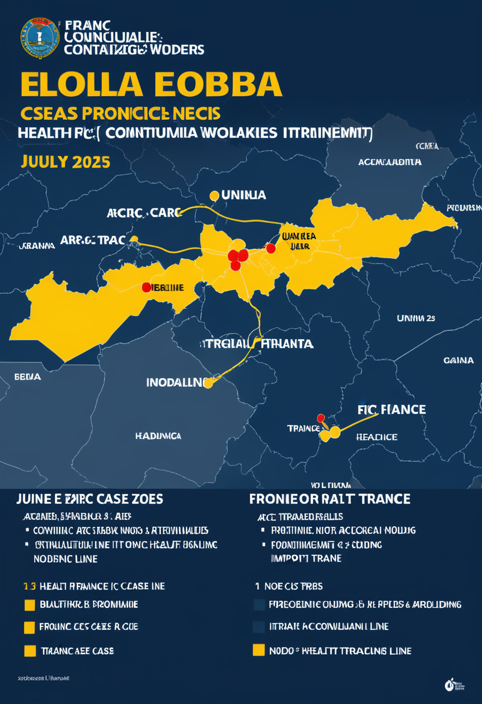
CDC最新ダッシュボード（7月1日更新）によると、エボラ（ブンジブグヨウイルス）の確認・疑い症例累計は1,333件・399死者（DRC+ウガンダ）に達した（前号時点のWHO確定例1,155件/304死者とは集計基準が異なる点に注意）。DRCではイツリ州・北キブ州を含む23保健区に拡大し、4州目Haut-Uéléへの浸透が続いている。接触者追跡率は82.7%を維持しているが、医療従事者75名感染・17名死亡という数値は最前線の消耗を示しており、フランス輸入例（6月24日確認）も経過観察中だ。
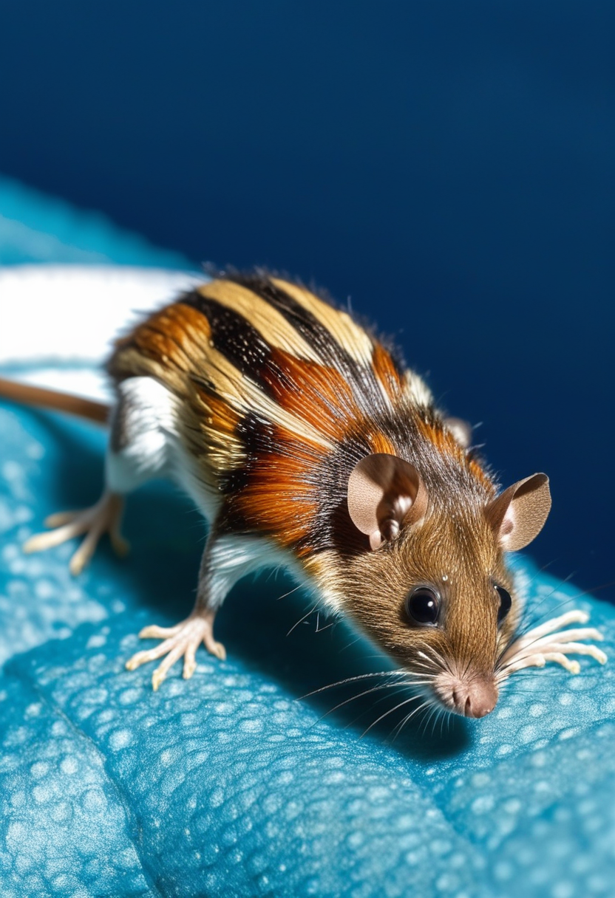
WHO（DON-599）によると、南大西洋クルーズ船「MV Hondius」でのアンデスウイルス（ハンタウイルス）集団感染は6月17日時点で確認12例・疑い1例（計13例）。4月6〜28日の発症後、急性呼吸促迫症候群（ARDS）へ進行した複数の死亡例が報告されている。CDCは潜在的曝露者18名をネブラスカ大学医療センター国家検疫施設に移送し42日間監視を実施中。アンデスウイルスはハンタウイルス属の中でもヒト間感染が稀ながら報告される特異な型であり、クルーズ船という密閉環境での集団発生は稀少な事例として引き続き注視される。
エボラPHEIC継続中にマールブルグ・アンデスウイルスが同時並走する異例の状況。特にウガンダでの2種フィロウイルス同時流行シナリオは接触者追跡の重複と医療疲弊を招くリスクがあり、WHO・アフリカCDCの統合的資源配分が急務となっている。
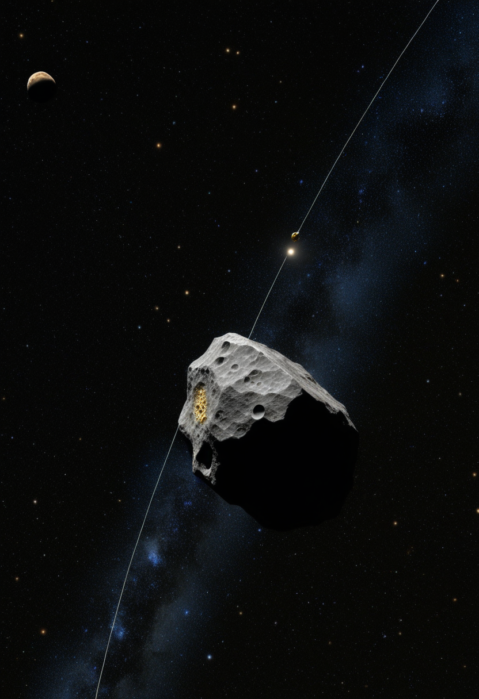
NASAのルーシー探査機が小惑星ドナルドジョハンソン（52246）を調査し、10.5日周期の縦回転と26.5日周期の横ぐらつきによる二軸タンブリング回転を発見した（Science誌 6/24掲載）。約1億5500万年前の衝突で生まれたピーナツ形の天体に古代の水の痕跡も検出されており、太陽系初期の物質進化の貴重な手がかりを提供する。次回の探査対象は木星トロヤ群小惑星ユーリュバテス（2027年予定）であり、比較惑星科学への貢献が続く。
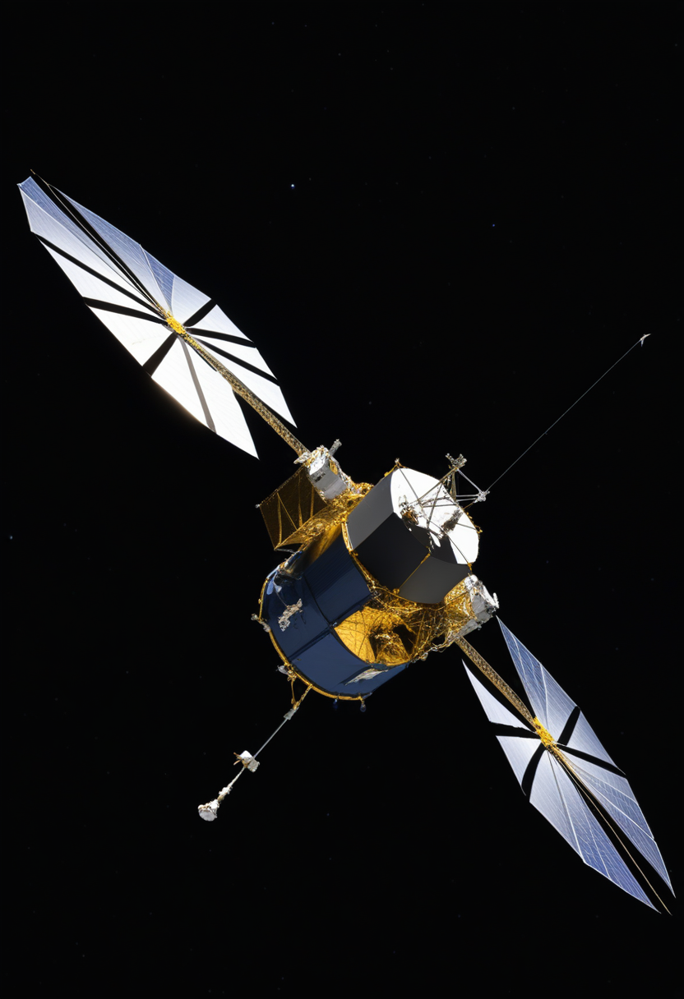
中国の惑星探査機・天問2号が近地球小惑星カモオアレワ（469219 Kamo'oalewa）への軌道投入に成功し、7月中に約1kgのサンプル採取を実施する計画だ（2027年後半に地球帰還予定）。前号（7/2）で取り上げたはやぶさ2のトリフネ最接近（7/5予定）と合わせ、日中両国が同週末に異なる小惑星でミッションの佳境を迎えるという歴史的な時期にある。カモオアレワは地球の「準衛星」として特異な軌道を持ち月の破片の可能性が指摘されており、サンプル分析が太陽系起源論に新知見をもたらすか注目される。
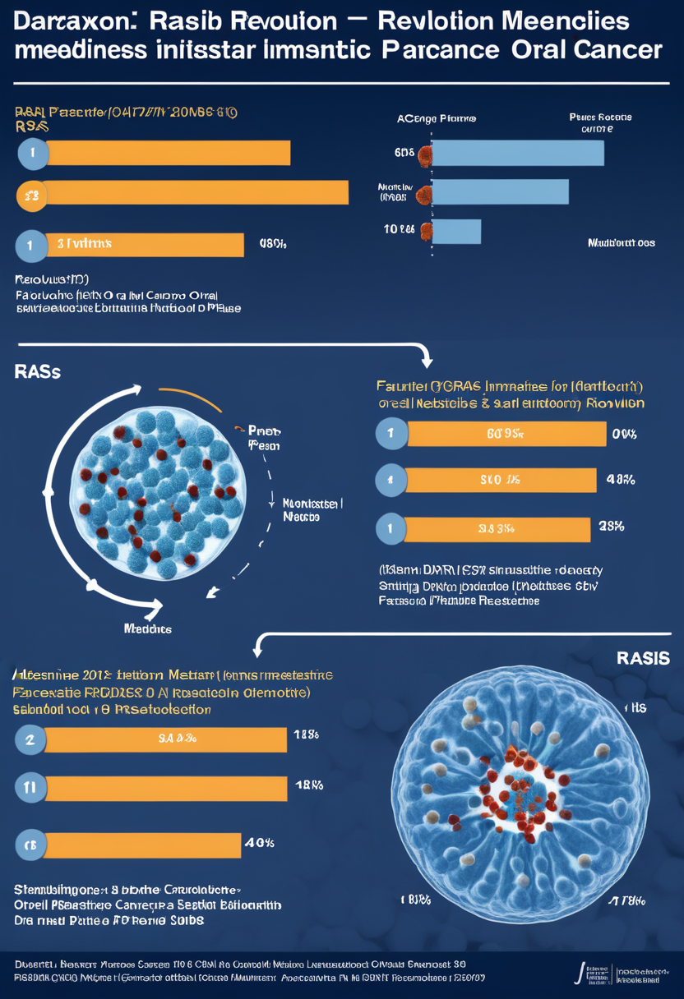
Revolution Medicines社の経口汎RAS阻害薬ダラキソンラシブが、転移性膵臓がんの第3相試験（RASolute 302）で中央全生存期間13.2か月を達成した（対照群6.7か月、死亡リスク60%削減）。結果はNEJMに同時掲載され、ASCO 2026年次総会（5月31日）でスタンディングオベーションを受けた。膵臓がんの90%超に関与するKRAS変異を標的にした経口薬が生存期間をほぼ2倍にしたことは、従来「治癒困難」とされてきたがん種のパラダイムを変える成果として腫瘍学の歴史的転換点と評されている。
2026年7月1日、Quantinuum社がトラップイオン方式98量子ビットプロセッサ搭載の量子コンピュータ「Helios」を発表した（Scientific American特集）。同社のアーキテクチャは量子ビットの精度・忠実度において現時点で最高水準の一つだ。一方Natureは同週、Googleらの2026年3月プレプリントを引用し「必要量子ビット数が従来想定の数千万から約1万に下方修正された」と報じており、現行の公開鍵暗号が2030年前後に解読できる可能性を指摘。G7は2026年1月に耐量子暗号移行ロードマップを採択済みだが実装加速が急務だ。
天文では日中両国が小惑星ミッションを同時に山場を迎え、医学ではKRAS膵臓がん治療に歴史的突破口が開いた。量子では高精度コンピュータの登場と暗号リスクが同時に浮上しており、耐量子暗号への移行は経営・政策レベルの急務となっている。
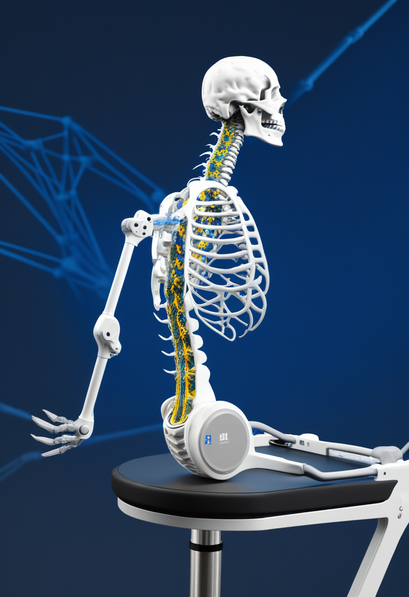
2026年6月1日、中国が脊髄損傷による麻痺患者向けの侵襲型BCI「NEO」を医療用途として国家承認したとMIT Technology Reviewが報じた。臨床試験段階を超えて実用製品として正式承認されたのは世界初であり、FDAの審査前に市場展開するNeuralinkやSynchronを先行する形で中国がBCI商業化競争をリードした。国家支援のもとで脳神経インターフェース分野での主導権争いが東西で加速しており、規制アーキテクチャの違いが競争優位に直結する構図が鮮明になっている。
Metaが「Brain2Qwerty」の第2世代を発表した。非侵襲型の脳磁図（MEG）スキャナーで脳の磁場変化を読み取り、手術不要で思考をキー入力に変換するインターフェースだ。大手プラットフォーム企業がデジタルヒューマン化技術に本格参入したことを示す象徴的な発表であり、侵襲型BCIとのトレードオフ（精度vs.アクセシビリティ）の議論を活発化させている。将来的にはスマートフォンやARグラスとの統合が想定され、日常的なデジタルヒューマンインターフェースの入口として位置づけられる。
2026年7月2日、サセックス大学でAISB 2026コンベンションの一環としてAI意識・倫理シンポジウムが開催された。AIシステムが「部分的に意識的」である可能性を多次元的に評価する新フレームワーク「Just Aware Enough」が提示され、意識ある可能性のあるAIを道具として扱い続けることの道徳的リスクが論じられた。2026年現在、AI意識に対応した法規制は世界的にほぼ空白であり、脳とデジタルの接続技術の急進展に倫理・法制度が大きく遅れている現状が浮き彫りになった。
中国による世界初の侵襲型BCI国家承認とMetaの非侵襲型商品化が同時進行し、「脳とデジタルをつなぐ」技術が規制整備を先行して普及している。AI意識フレームワーク構築も急務で、技術普及速度と社会制度の乖離が最大のリスク要因として浮上している。
2026年7月3日、ウガンダでは2種のフィロウイルスが同じ土地に根を張ろうとしている。それを追いかける医師たちの手と、量子コンピュータが次の壁を越えた手が、同じ朝の空の下にある。世界初のワイヤレスBCIが人体の中で信号を送り始め、膵臓がんの壁がかつてないほど低くなった。中国が脳のインターフェースを「製品」として承認し、MetaはMEGスキャナーで思考を文字にしようとしている。これらを「別々のできごと」として眺めるより、人間が自分という存在の限界と可能性をあらゆる方向から同時に試している一つの時代として受け取るほうが、今の景色に近い気がする。
では、また来週の朝に。 — JaH